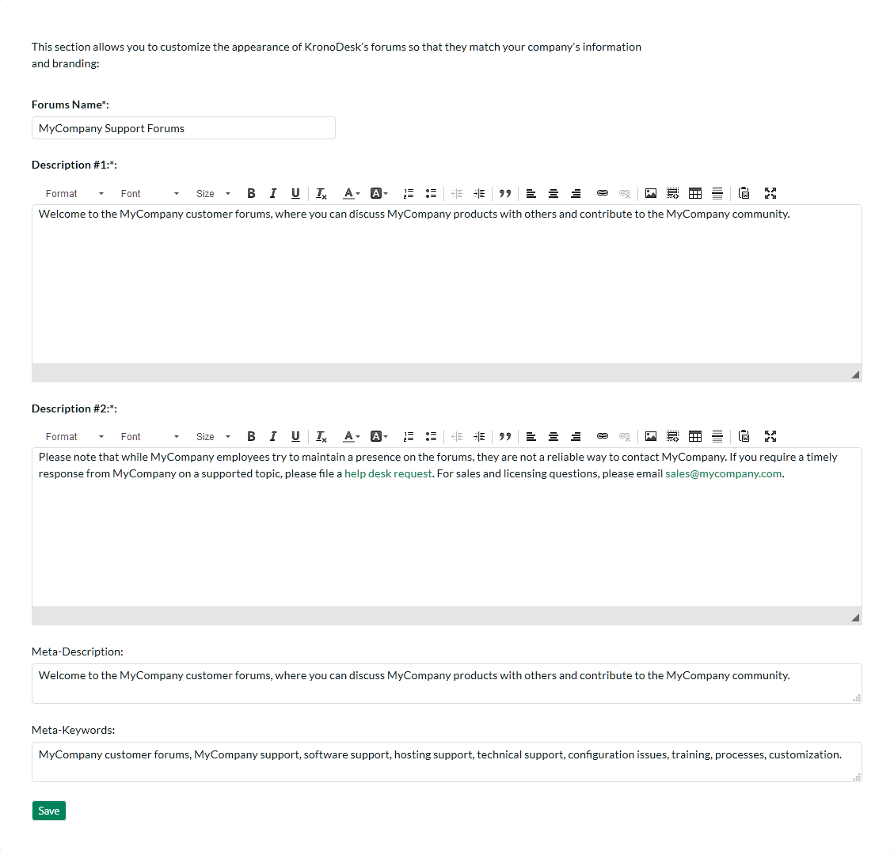
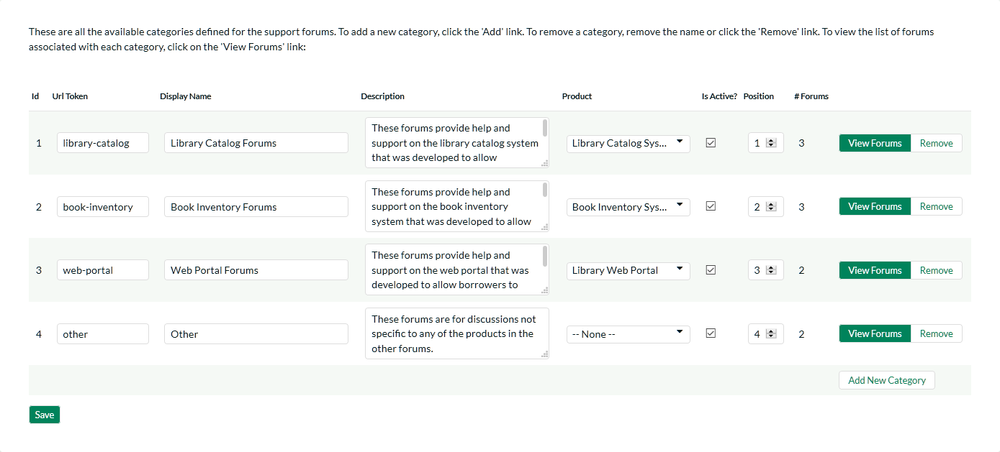

Forum Settings¶
This section contains all of the settings that affect the customer support forums part of the application.
Appearance¶
This page allows an administrator to customize the appearance of the customer support forums so that the standard text that is displayed matches the support policies of the organization. It also allows the administrator to customize some of the web page meta-data fields that can be used to optimize the support forums for Search Engine Optimization (SEO).

This page lets you specify the following values:
-
Forums Name -- You can change the title displayed for the online support forums to match your company's name. For example you might want to rename the forums "Acme Inc. Support Forums".
-
Description #1 -- This rich text box contains the first paragraph of introductory text displayed on the support forums home page.
-
Description #2 -- This rich text box contains the second paragraph of introductory text displayed on the support forums home page.
-
Meta-Description -- This plain text box contains the HTML Meta-Description field that is not displayed in the web browser, but is often used by search engines to rank the content. You may want to modify this to ensure that your support forums are ranked highly on Internet search engines. It should contain a brief description of your company, its products, and the support forums
-
Meta-Keywords -- This plain text box contains the HTML Meta-Keywords field that is not displayed in the web browser, but is often used by search engines to rank the content. You may want to modify this to ensure that your support forums are ranked highly on Internet search engines. It should contain a comma-separated list of keywords related to your company and products/services.
Categories & Forums¶
This page lets administrators manage the different categories and forums used in the KronoDesk customer support forums. The customer forums are divided up into categories and each category has a set of forums. Typically the forum categories are associated with a particular product or service, although there may be some general categories that are product agnostic.

When you first open this page, the system will list all the forum categories already in the system. You can use this page to perform the following operations:
-
Modify an Existing Category -- to do this, you simply need to update the URL-Token, Display Name, Description, Product, Active flag and Position value for the category and click [Save].
-
URL Token -- This is the URL segment that will be used to create the hyperlink to access this forum category (e.g. http://myserver/KronoDesk/Forum/url-token.aspx). Url Tokens have to be unique and can only contain alphanumeric characters and hyphens.
-
Display Name -- This is the name of the category that will be displayed in the category details page.
-
Description -- This is the long description of the category that will be displayed in the category details page.
-
Product -- If the category is related to a specific product, you should select the product.
-
Active -- This should be checked if you want the category to be visible within the application. Old categories that are no longer in use should be made inactive.
-
Position -- This should be used to specify the order of the categories.
-
Create a New Category -- to this, you simply need to click on the "Add New Category" hyperlink in the bottom row and then enter the new category information and click [Save].
-
Delete an Existing Category -- to do this, simply click on the "Remove" hyperlink next to the category. You will be asked to confirm the deletion, after which the category will be deleted from the system. Note: If you delete a forum category, the system will delete all the forums, threads and message contained within that category.
To view the list of forums associated with a particular category, you should click on the "View Forums" link that will display the appropriate list of forums:
You can use this page to manage the various forums in the category:
-
Modify an Existing Forum -- to do this, you simply need to update the URL-Token, Display Name, Description, Active flag and Position value for the forum and click [Save].
-
URL Token -- This is the URL segment that will be used to create the hyperlink to access this forum (e.g. http://myserver/KronoDesk/Forum/category/url-token.aspx). Url Tokens have to be unique for the specific category and can only contain alphanumeric characters and hyphens.
-
Display Name -- This is the name of the forum.
-
Description -- This is the long description of the forum that will be displayed in the forum details page.
-
Active -- This should be checked if you want the forum to be visible within the application. Old forum that are no longer in use should be made inactive.
-
Position -- This should be used to specify the order of the forums in the category.
-
Create a New Forum -- to this, you simply need to click on the "Add Forum" hyperlink in the bottom row and then enter the new forum information and click [Save].
-
Delete an Existing Forum -- to do this, simply click on the "Remove" hyperlink next to the forum. You will be asked to confirm the deletion, after which the forum will be deleted from the system. Note: If you delete a forum, the system will delete all the threads and message contained within that forum.